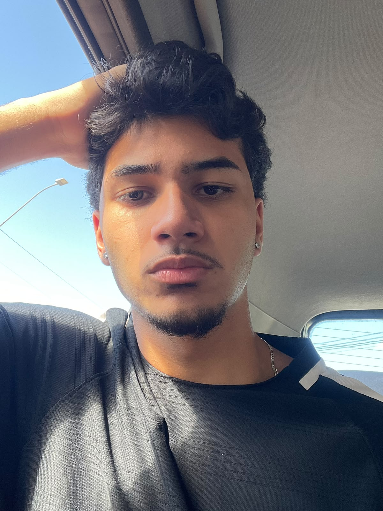

Sobre
mim
About

PT-BR
João Guilherme é um técnico em design gráfico de 18 anos que se graduou no SENAI. O designer de Belo Horizonte já residiu em diversos estados do Brasil; suas vivências são parte da criatividade e inovação com que desenvolve seus projetos de forma única e consistente.
Caracterizado pela versatilidade em seus trabalhos, João possui um portfólio completo, que abrange identidade visual, criação de marcas, design editorial, produção de embalagens e interfaces para websites, sempre visando a UX/UI.
João é um artista jovem e com personalidade, que busca se atualizar e melhorar suas obras frequentemente.
ENG
João Guilherme is an 18-year-old graphic design technician who graduated from SENAI. A designer from Belo Horizonte who has lived in several states across Brazil, João combines his life experiences with creativity and innovation to develop his projects in a unique and consistent way.
Known for the versatility of his work, João has a comprehensive portfolio encompassing visual identity, brand creation, editorial design, packaging, and website interfaces, with a focus on UX/UI. He is a young artist with a distinctive personality who constantly seeks to stay up to date and improve his work.